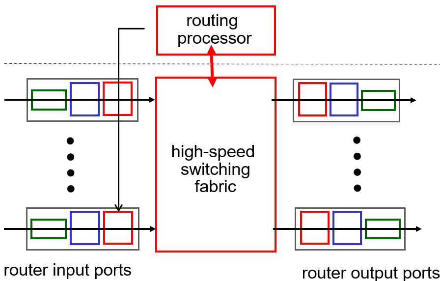

网络层概述
网络层是将数据从设备到设备的一个层。在传输层中，我们探索的是起点到终点的过程，而网络层将这一过程细化成主机到路由器、路由器到路由器、路由器到主机的传输过程。网络层的数据包被称为 datagram。
网络层的核心功能是转发（forwarding）和路由（routing）。
转发：将输入端口的数据包移动到合适的路由器的输出端口的过程；
路由：通过路由算法得到路由表（routing
table）的过程，即从一个包的目标 IP 得知路由器的输出端口。
用 Data Plane 表示数据的行动一层，Control Plane 表示控制数据行动的那一层。即转发是 Data Plane 的工作，路由是 Control Plane 的工作。传统路由器二者合二为一，一个路由器既属于 Data Plane，又属于 Control Plane，通过这种情况下通过路由算法得到路由表仅仅是局部的最优，并没有全局视角。现代的网络中将这两个功能解耦，通过一个远端服务器（Remote Controller）作为 Control Plane，与路由器中的局部代理（Local control agents，CAs）进行交互，分配给路由器路由表。这种网络被称为软件定义网络（software defined network, SDN）。
除此之外，传统路由器仅能够通过目标主机的 IP 地址进行路由，这是因为 IP 层的数据中没有端口号、MAC 地址等信息，现代路由器可以通过来源主机的 IP 地址，目标端口号，发送方的 MAC 地址等信息进行路由或者一些操作（如丢弃）。
路由器的架构
路由器的基础结构分为输入口和输出口，中间进行数据包的转发，同时有一个处理器计算路由表。

输入端口
输入端口部分从物理层、链路层依次解包，最后得到网络层的 IP 数据包，然后放入队列中等待转发。

转发过程
传统路由器使用 IP 地址，通过查表得到一个数据包应该前往的端口。
逻辑上的转发表是一个范围，但是在路由器中，一个转发规则是一个二进制串的前缀，匹配的规则是 最长前缀匹配，即找到一个能够匹配的最长的一条规则。

地址 11001000 00010111 00010110 10100001
能够匹配的最长的地址前缀是第一条规则，所以应该通过 0 号接口。
三种数据在路由器中的流动方式，各有优劣。
当数据包进入的速度比路由器转发的速度快时会导致入口阻塞，超过队列的大小后会直接丢包。还会有 HOL 阻塞（Head-of-line blocking）问题，当队列的队首需要前往端口 1，但是其他队列率先抢占了端口 1，这导致它需要等，同时它后面的所有包也需要等。
输出端口
输出端口同样有一个缓冲队列，将一个个包封装上链路层、物理层的信息发送。
当缓冲队列满了后，会导致丢包。
- 由于路由器的输入的带宽大于输出带宽，导致数据包会在路由器输出端口的缓冲队列中等待，满了之后就会丢包。
- 数据包中有 TTL 字段，每经过一个路由器时，TTL 会减一，当 TTL 字段减到 0 时，路由器自动把它丢弃。
对于队列中数据，有如下的调度策略
FIFO（First In First Out）：先进先出
RR（Round Robin）：轮转调度，每次转发来源不同的包，保证了转发的公平性
WFQ（Weighted Fair Queuing）：加权公平排队
RED（Randomly Early Drop）：在队列有可能达到上限时，随机选择一些包丢弃，让发送方触发拥塞控制，降低发送方的速度
IP 数据包
数据包的内容

ver：IP 协议的版本号0x4或0x6head.len：包头的长度除以 4 的结果。ver+head.len共 1 个字节。time to live：最多可以经过的路由器个数，每经过一个路由器减减，到 0 时直接被丢弃upper layer protocol：向上传输层传递的是哪一个协议（6 为 TCP、17 为 UDP）（demultiplexing）length：IP 数据包的总长度（16 位）16-bit identifier，flag，fragment offset：切片相关的字段check sum：只针对 IP 数据包包头部分的校验和。
IP 切片
当来源包的大小大于出去链路的 MTU 时，路由器会将该 IP 包拆分成若干个完整的 IP 包发送出去，然后仅在目标位置进行重新组合。切片发生在 路由器，组装发生在 目标。
Maximal Transfer Unit，一条链路上的能够传输的数据包（frame）的包体部分（链路层的包体）的最大长度，不同链路不一样。以太网中常见的是 1500 bytes。链路层的包体部分实质上就是整个 IP 包。MSS 是传输层包体的最大长度。 \[ \mathrm{MTU}=20+20+\mathrm{MSS} \] 其中第一个 20 是网络层包的包头，第二个 20 是传输层包的包头。

切片时将包头和包体分开，然后将包体切分，再对每个包体，给它们添加一个包头。包的包体不能超过 \(1500 - 20 = 1480\, \mathrm{bytes}\)，即总大小不能超过\(1500\,\mathrm{bytes}\)。其中，需要注意的是：
- 切片的 ID 号继承原包的 ID 号
- Frag Flag 表示后面是否还有碎片
- offset 表示切片的包体的第一个字节在原始包中的位置（从 0 开始的）除以 8
IPv4 地址
IPv4 是一个 32 位的无符号整数，是分配给每一个网卡（网口）的一个地址。每个网卡和路由器上的不同网口都有 IP 地址
子网
如果两个网口可以不通过路由器连接，那么这两个网口在同一个子网里。
上图中蓝色部分相连的部分属于一个子网，路由器的不同端口一般属于不同子网。子网的作用：
- 限制广播包的传输范围：由于 ARP 请求包、DHCP 相关的包等都需要广播，为了限制其传递，需要子网限制范围
- 安全因素：信息不会泄露到外网（公网）
因为有子网的存在，IP 地址被分为前缀和后缀。前缀表示了这个 IP 属于的子网，后缀表示这个 IP 在子网中的编号。
前缀部分（subnet
part）：表示这个网口属于哪一个子网。同一个子网的前缀必须相同。叫做网络的
id 号（net id）
后缀部分（host
part）：表明子网内的编号，同一个子网的后缀必须不同，也叫做主机号（host
id）
由于不同类型的 IP 地址前后缀的划分方式不同，需要通过
子网掩码 进行标识。例如 IP 地址
192.168.0.2/24 中，24 即为子网掩码，表示 IP
地址的前 \(24\) 位为前缀，后 \(8\) 位为后缀。与该地址属于同一个子网的 IP
地址有 192.168.0.0 ~ 192.168.0.255。
在计算机中，子网掩码是通过一个前缀部分全 \(1\)，后缀部分全 \(0\) 的二进制数表示，这样的情况下用 IP 地址与其子网掩码做二进制与，就会得到子网的 id 号。通过比较两个地址的子网 id 号可以判断是否在同一个子网中。
主机位全零的 ip 地址不会给任何主机使用，而是分配给网络的 ip 地址，也叫做 subnet ip。
主机位全一的 ip 地址也不会给任何主机使用，表示广播地址，用于传输广播包。
-
与
255.255.255.255的区别：255.255.255.255只在子网中传播 - 广播地址除了在子网中传播，还可以从外网向该网络发送广播包
子网掩码的用途是识别一个包，是向内网发还是向外网发，以明确目标 MAC 地址。
- 当内网传输数据包的时候，在链路层封包的时候，发现目标 IP 与子网掩码的与和子网 IP 相同，那么就会将链路层的 dst MAC 地址直接写成目标的 MAC 地址（通过 ARP 缓存得知目标 MAC 地址）。
- 当向外网传输数据包的时候，在链路层封包的时候，发现目标 IP 与子网掩码的与和子网 IP 不同，那么就会将链路层的 dst MAC 地址直接写成子网的网关的 MAC 地址。
子网的切分
现代网路中子网的切分是使用 无类别域间路由 CIDR（Classless InterDomain Routing）做到按需划分，同时划分的位置不一定为 8 的整数倍。
某供应商具有 IP 地址段 47.0.0.0/8，现其下有三个客户 A，B，C
需要规模分别为 \(130\)，\(90\)，\(46\) 的 IP
地址，那么划分就按照这三个客户的规模对该地址段进行划分：
-
客户 A 需要 \(130\) 个 IP
地址，那么就划分
47.152.0.0/24（共 \(256\) 个地址）； -
客户 B 需要 \(90\) 个 IP
地址，那么就划分
47.152.1.0/25（共 \(128\) 个地址）； -
客户 C 需要 \(46\) 个 IP
地址，那么就划分
47.152.1.127/26（共 \(64\) 个地址）；
具体而言，先将需求从大到小排序，然后对于每个个数，找到不小于的最小的 \(2^k\)，然后再去分配这 \(2^k\) 个地址。
传统网络中将 IP 地址进行分类，分为 A B C D E 五类 其中 A、B、C 类常用于普通网络。每个类别都有固定的网络部分和主机部分长度。分类规则如下：
| 类别 | IP 范围 | 默认子网掩码 | 网络位长度 | 主机位长度 | 用途 |
|---|---|---|---|---|---|
| A | 0.0.0.0 - 127.255.255.255 | 255.0.0.0 | 8 位 | 24 位 | 大型网络 |
| B | 128.0.0.0 - 191.255.255.255 | 255.255.0.0 | 16 位 | 16 位 | 中型网络 |
| C | 192.0.0.0 - 223.255.255.255 | 255.255.255.0 | 24 位 | 8 位 | 小型网络 |
| D | 224.0.0.0 - 239.255.255.255 | 无子网掩码 | - | - | 多播组 |
| E | 240.0.0.0 - 255.255.255.255 | 保留 | - | - | 实验用途 |
DHCP
一个新接入的网络需要获取一个 IP 地址，这样才能连通网络。可以由管理员手动分配，更常见的是网络中的 DHCP 服务器使用 DHCP 协议（Dynamic Host Configuration Protocol）自动分配。
具体过程如下：
- 由客户端广播一个包 DHCP discover 包
- 目的：用于寻找 DHCP 服务器。
- 应用层中有 yiaddr 为：0.0.0.0，表示 your ip addr，预留出来，存放分配的 ip 地址；transaction id：表示包的编号。
- 传输层协议使用的是 UDP，端口为 src port：68（客户端），dst port：67（服务端）。
- 网络层：src ip 为：
0.0.0.0，dst ip 为：255.255.255.255表示广播。 - 链路层：src MAC 为自己的 MAC 地址，dst MAC 为
ff:ff:ff:ff:ff:ff表示广播。
- DHCP 服务器会向该客户端发送 DHCP offer 包
- 目的：DHCP 服务器向客户端提供 ip 地址。
- 应用层中 yiaddr 为分配的 ip 地址；transaction id：与 discover 包中一致，让客户端知道这是发给它的包。
- 传输层中端口为 src port：67（服务端），dst port：68（客户端）。
- 网络层中：src ip 为 DHCP 服务器 ip 地址；dst ip 为：255.255.255.255，这里由于对面还不知道自己的 ip，还需要广播。
- 这个包还包括了网络中的其他信息：子网掩码，网关 ip 等。
- 客户端再发送 DHCP request 包
- 这个包与 DHCP discover 包类似。
- 目的：在网络中由多个 DHCP 服务器时，会收到多个 DHCP discover 包，告诉各个 DHCP 服务器是否被接受了。
- 应用层中 yiaddr 为客户端拟接受的 ip 地址，
- DHCP 服务器发送 DHCP ACK 包
- 仍然是广播包
- 目的：告诉客户端收到了，可以使用这个 ip 地址。如果收到的 ACK 包中的 yiaddr 与分配出去的 IP 地址不同，那么就会回收刚刚打算分配出去的 IP 地址。
国际上分配 IP 地址的机构为 ICANN（Internet Corporation for Assigned Name and Number）。
NAT 地址转换
NAT（Newwork Address Translation）技术是用于进行网络地址转化。实际上是为了节省 IPv4 地址的使用。一个网络可能仅有路由器一个公网 IP，即只有这一个 IP 能够在公网中传递数据，而其他设备分配的是内网 IP。
一般来说，10.a.b.c
类型，172.16 ~ 172.31，192.168 开头，这些 IP
地址属于内网 IP（实验 IP）。
NAT 一般是在路由器上的。一个可以进行 NAT 的路由器，会将发出去的包中的 src ip 与 src port 进行替换，src ip 为该路由器的公网 IP，同时在路由器中会维护一个转换表，用于记录每一条转换记录。同时，如果从外部来的一个包，路由器也会将 dst ip 和 dst port 按照转换表反过来转换成对应的内网 IP 和对应的端口号。
经过转换后，若干个内网中的设备仅通过一个公网 IP 就可以连到网络，大大节省了公网中的 IP 数量。
路由器
路由算法
link-state
distance-vector
路由协议
OSPF
OSPF（Open Shortest Path First）协议具有如下特点：
- 使用 link-state 协议
- 安全，所有信息都经过验证
- 如果存在多条起点终点相同且代价相同的路径，都会存下来，并进行负载均衡分配
- 支持单播和多播
- 单播（uni-cast）是指一个源发送到一个目的地
- 多播（multi-cast）是指一个源发送到多个目的地
- 多播的 OSPF 称作 MOSPF（Multi-OSPF）
- 直接使用 OSPF 的数据进行计算
- 层级划分，构成大型网络